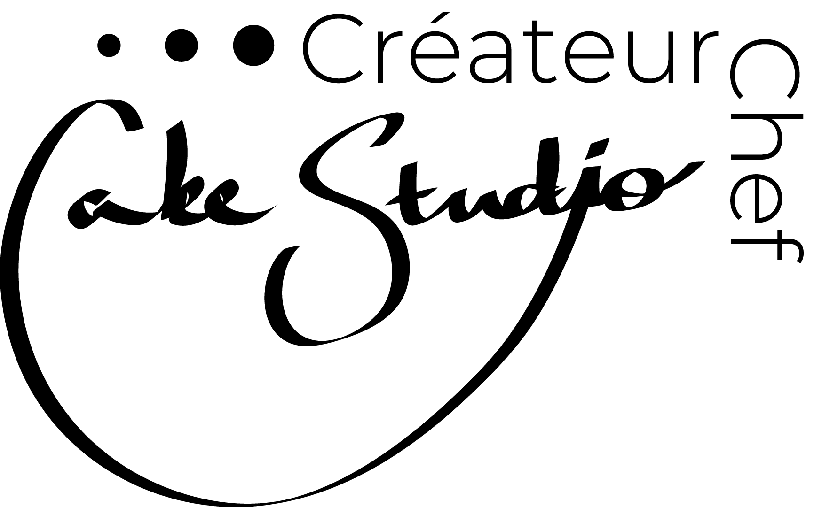
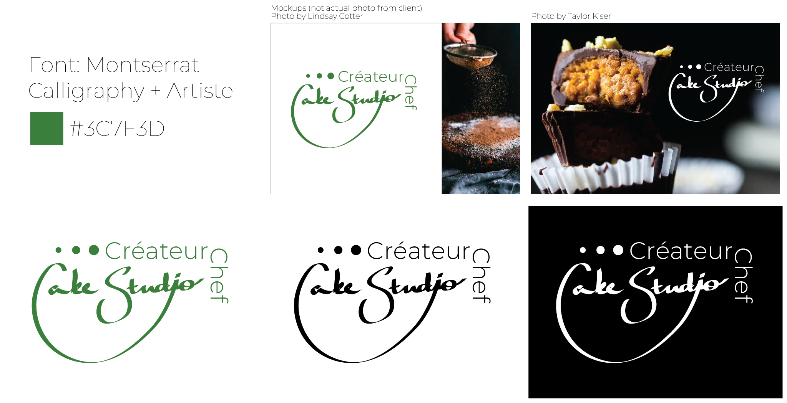

Cake Studio

Development
Der Klient wollte Artiste, luxuriös und genau auswirken deshalb die mathematische und calligrafie Motive.


Endprodukt

Der Klient wollte Artiste, luxuriös und genau auswirken deshalb die mathematische und calligrafie Motive.